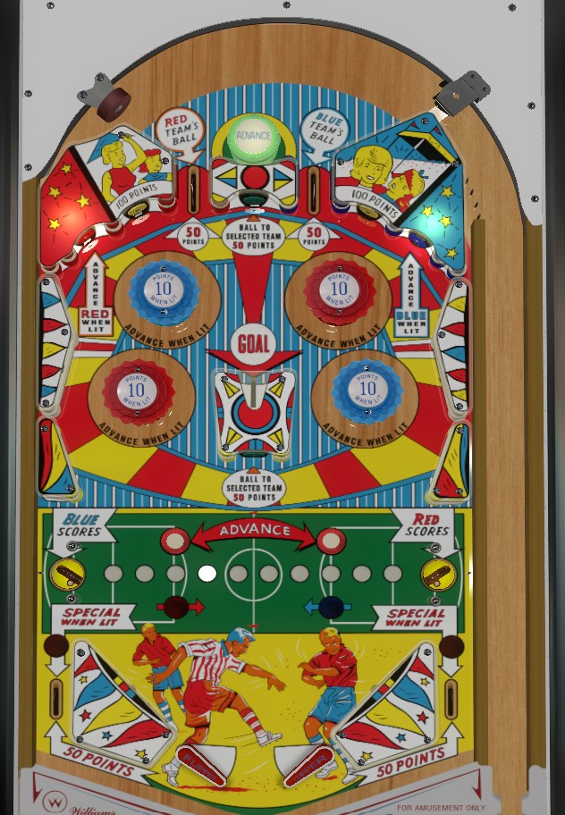

Not to be confused with other soccer-themed pinball games, such as the two player Soccer (Gottlieb, 1975), the four player Super Soccer (Gottlieb, 1975), World Cup (Williams, 1978), or World Cup Soccer (Bally Williams, 1994).
The opening plunge on ball 1 will "select" a team for the rest of the game. Get as many goals as you can with the selected team. The team with current possession is shown by the blue and red insert lights at the bottom of the table. Lit bumpers and standup targets advance the team currently with possession one step toward their goal; instant goals can be scored with the lower left saucer (blue), lower right saucer (red), or center kicker (whoever has the ball). Making a goal with your selected team scores 100 point bonus, and making enough of them lights or scores Specials.
The two top lanes will give initial possession of the ball to the Red (left lane) or Blue (right) team, and score 50 points. The green Advance passive bumper scores 10 points and moves the ball toward the goal of the team currently in possession. On the first ball of the game, the top lane that the ball rolls through will "select" a team, Red or Blue, and the selected team is the one you want to score as many goals with as possible.
If the Red team has the ball, the Red bumpers and the Advance Red When Lit targets will be lit. These targets score 10 points and move the white light one position to the right on the row of inserts above the flippers that form a soccer field. If the white light is advanced all the way to the right, a goal is scored for the Red team, which scores 100 points only if the Red team is your selected team.
If the Blue team has the ball, the Blue bumpers and Advance Blue When Lit targets are lit for 10 points, and they will advance the ball to the left one position. Advancing the white light all the way to the left scores a Blue goal, which is also worth 100 points only if the Blue team was selected by the plunge on the first ball of the game. Whenever a goal is scored, possession of the soccer ball is given to whichever team is not the one that just scored.
There are 3 ways to score an instant goal, without manually advancing the white light all the way to one side of the field or the other. The lower left saucer scores an instant goal for Blue, moving the white light all the way to the left in the process (and still giving 10 points per advance!), before awarding 100 points if Blue was your selected team and giving the ball back to Red. The lower right saucer does the same thing for Red, moving the white light all the way to the right at 10 points per step. The kicker in the center of the table will act as an instant goal for whichever team is currently listed as in possession.
It is ideal to score as many goals with your selected team as possible. If the soccer ball is currently in possession of the team you did not select, you can try to score a goal with that team by hitting the appropriate bumpers, standup targets, or lower saucer. However, the standup targets in the center of the table and directly above the center kicker will transfer possession of the soccer ball to your selected team without moving the white insert at all. This helps ensure that bumpers, standup targets, and the center kicker will contribute to your cause as frequently as possible. However, the center target is somewhat dangerous to shoot for directly, so do so at your own risk.
The standup targets above the bumpers that are not labelled Advance When Lit or Ball To Selected Team score 100 points.
At the bottom of the table, there are no in lanes. The flippers back up directly to the slingshots. Slingshots always score 1 point. The slingshots are at a relatively shallow angle to encourage more deflections into the out lanes. The out lanes score 50 points.
Scoring a predetermined number of goals with a team- 7 on easy settings, 11 on hard settings- lights the left (Red) or right (Blue) out lanes for a special. Instant specials are also awarded for reaching predetermined numbers of goals with your Selected team specifically. There is no end of ball or end of game bonus. Tilt ends game.